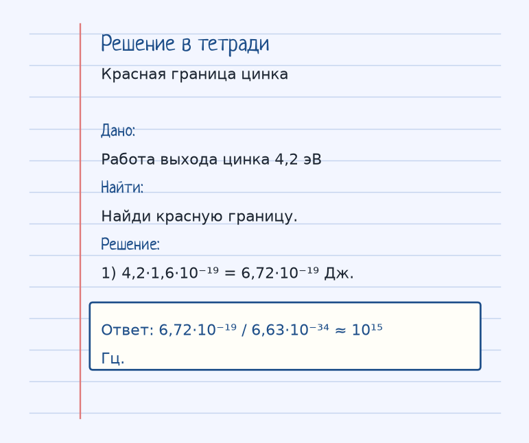
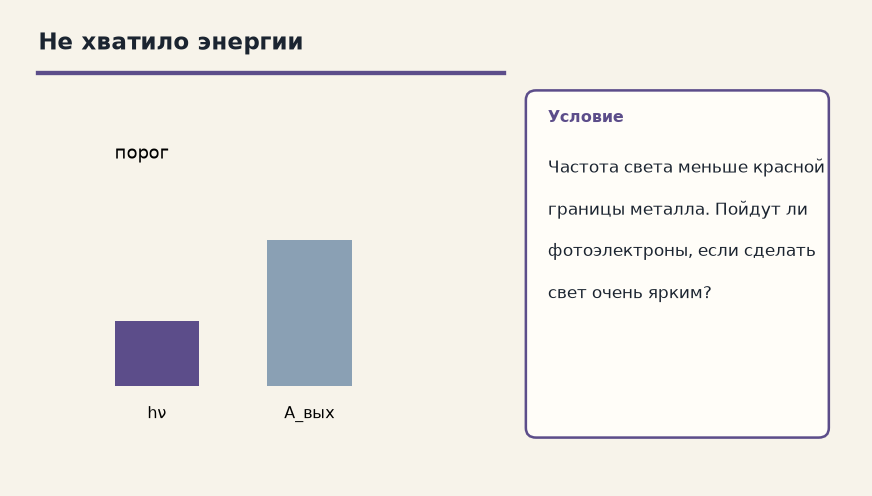
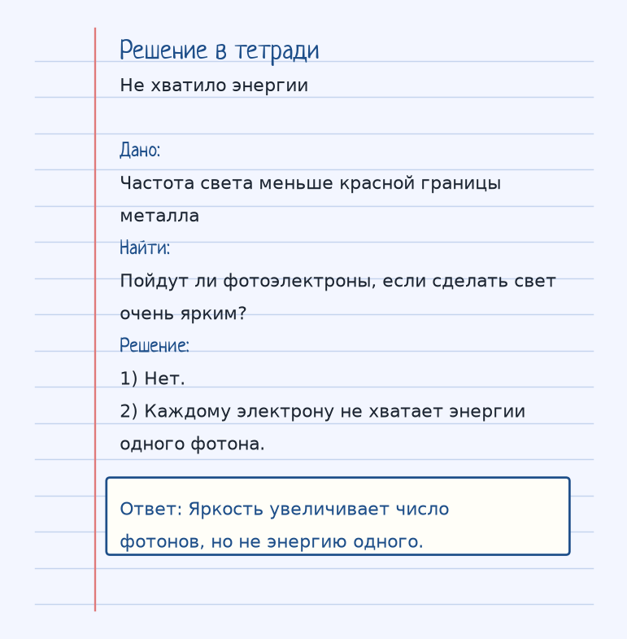

Тема «Уравнение Эйнштейна для фотоэффекта»: физический смысл, единицы величин, типичные ошибки и два разобранных примера.
Схема к условию.
Физический смысл
Энергия фотона идет на работу выхода электрона из металла и на его кинетическую энергию.
Уравнение Эйнштейна делит энергию фотона на две части: h·ν = A_вых + (m·v²)/2. Сначала фотон тратится на работу выхода A_вых — оторвать электрон от металла. Остаток становится кинетической энергией.
Если h·ν меньше работы выхода, остатка нет и электрон не вылетает. Граница ν_min = A_вых / h. Постоянная Планка h = 6,63·10⁻³⁴ Дж·с.
Для цинка в карточке A_вых = 4,2 эВ. Перевод в джоули: 4,2·1,6·10⁻¹⁹ = 6,72·10⁻¹⁹ Дж. ν_min = 6,72·10⁻¹⁹ / 6,63·10⁻³⁴ ≈ 10¹⁵ Гц. Это ультрафиолет, не красный свет: название «красная граница» историческое, про край видимого спектра, а не про цвет цинка.
Формула и единицы
h · ν = A_вых + (m · v²) / 2
ν_min = A_вых / h
h = 6.63 · 10⁻³⁴ Дж·с — постоянная Планка. Вторая формула — красная граница.
h = 6,63·10⁻³⁴ Дж·с. ν_min = A_вых / h. Энергия фотона h·ν.
Пояснение
Фотон как монета: сначала платишь за выход из металла, сдача — скорость электрона. Не хватило монеты — выхода нет.
Типичные ошибки
Не подставляй электронвольты в ν = A/h, пока не переведёшь в джоули. 1 эВ = 1,6·10⁻¹⁹ Дж, как в решении карточки.
Разобранные примеры. Решение каждого открывается отдельно.
Разбор 1
Красная граница цинка
Работа выхода цинка 4,2 эВ. Найди красную границу.
На схеме только условие.
Порядок записи: данные, единицы СИ, искомая величина, ход решения, ответ.
Дано. Работа выхода цинка 4,2 эВ
В СИ.
Найти. Найди красную границу.
Решение.
4,2·1,6·10⁻¹⁹ = 6,72·10⁻¹⁹ Дж.
6,72·10⁻¹⁹ / 6,63·10⁻³⁴ ≈ 10¹⁵ Гц.

Разбор 2
Не хватило энергии
Частота света меньше красной границы металла. Пойдут ли фотоэлектроны, если сделать свет очень ярким?

На схеме только условие.
Порядок записи: данные, единицы СИ, искомая величина, ход решения, ответ.
Дано. Частота света меньше красной границы металла
В СИ.
Найти. Пойдут ли фотоэлектроны, если сделать свет очень ярким?
Решение.
Нет.
Каждому электрону не хватает энергии одного фотона.
Яркость увеличивает число фотонов, но не энергию одного.

Разбор 3
Красная граница
Как записать частоту красной границы через работу выхода?
На схеме только условие.
Порядок записи: данные, единицы СИ, искомая величина, ход решения, ответ.
Дано. Aвых и h
В СИ.
h νмин = Aвых.
Найти. νмин
Решение.
νмин = Aвых / h.
νмин = Aвых / h.
Разбор 4
Планк
Чему равна постоянная Планка в СИ?
На схеме только условие.
Порядок записи: данные, единицы СИ, искомая величина, ход решения, ответ.
Дано. h
В СИ.
6,63·10⁻³⁴ Дж·с.
Найти. h
Решение.
h = 6,63·10⁻³⁴ Дж·с.
6,63·10⁻³⁴ Дж·с.
Разбор 5
Ниже порога
h ν меньше работы выхода. Вылетит ли электрон?
На схеме только условие.
Порядок записи: данные, единицы СИ, искомая величина, ход решения, ответ.
Дано. Энергии кванта не хватает
В СИ.
Кинетическая энергия получилась бы отрицательной.
Найти. Ответ
Решение.
Нет.
Нет.
Разбор 6
Электронвольт
Сколько джоулей в 1 эВ?
На схеме только условие.
Порядок записи: данные, единицы СИ, искомая величина, ход решения, ответ.
Дано. Перевод единиц
В СИ.
1 эВ = 1,6·10⁻¹⁹ Дж.
Найти. Значение
Решение.
1,6·10⁻¹⁹ Дж.
1,6·10⁻¹⁹ Дж.
Разбор 7
Левая часть
Что стоит в левой части уравнения Эйнштейна для фотоэффекта?
На схеме только условие.
Порядок записи: данные, единицы СИ, искомая величина, ход решения, ответ.